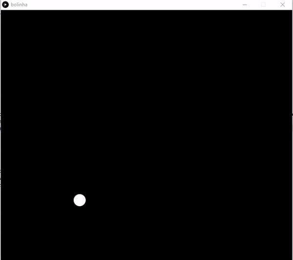

O Upgrade do MRU
Nesta atividade, se utilizando das fórmulas de física, modificarei o algoritmo de lançamento balistico, feito em sala de aula, para simular o quicar de uma bola, cuja velocidade vertical diminui sempre que tocar o chão.
A lógica bruta seria: Assim que o objeto lançado tocar o chão (um valor Y predeterminado), o movimento deveria ser "reiniciado", porém com a velocidade um pouco menor.
Observando a fórmula percebemos que tudo depende do tempo e para "reiniciar" o movimento precisamos apenas zerar o tempo, sem perder a distancia percorrida (X).
Vamos ao código!
- Primeiro criei as variáveis necessárias para a execução desta lógica: uma para guardar as velocidades Horizontal e vertical. vInicialH e vInicialV outras para guardar a posição inicial do objeto, ou seja, o chão. xInicial e yInicial;
- Um detalhe importante: A velocidade vertical é diretamente oposta a aceleração da gravidade;
dAtual = MRUV(-vInicialV, aAtual, tAtual); - E por fim, adicionei o IF mágico!
- Armazena a posição inicial do movimento, X;
- Diminui as velocidades;
- E zera o cronometro;
if(y >= yInicial){
___ xInicial = x;
___ vInicialV /= 1.5;
___ vInicialH /= 1.2;
___ tAtual = 0;
}